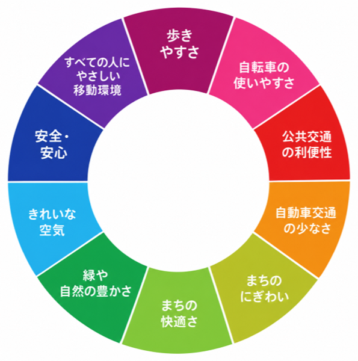
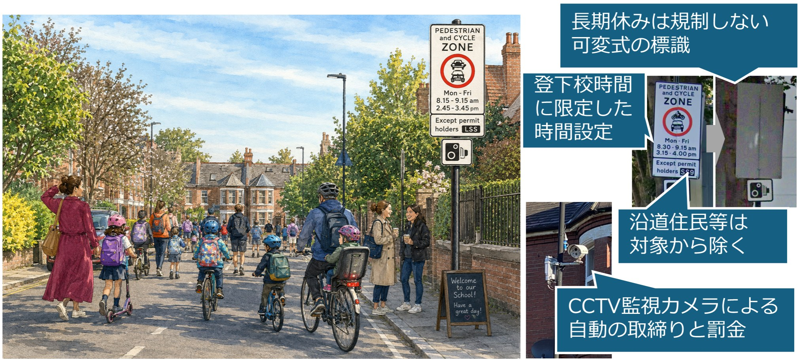
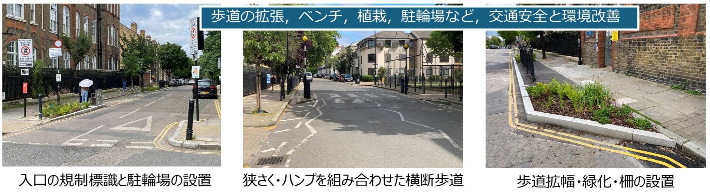
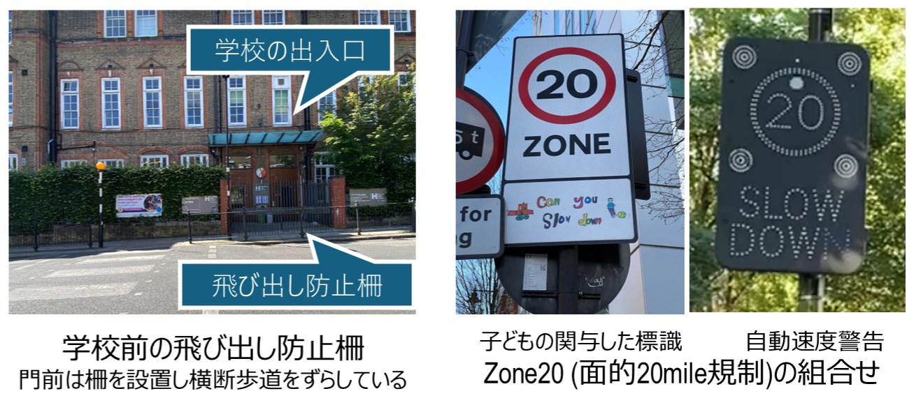

ロンドンのスクールストリート（School Streets）に学ぶ
自動車送迎を徒歩・自転車へ転換させる取り組み
ロンドンでは、子どもを小学校へ送迎する自動車交通が問題となっています。子どもの肥満といった身体活動の面のみならず、朝ラッシュ時の渋滞の主要な原因にもなっています。学校の前面道路における自動車駐車禁止などの措置がとられてきましたが、より強い対策として、朝夕の登下校時における学校周辺道路の時間帯車両通行禁止規制を主たる対策とする School Streets が導入され、自動車から徒歩・自転車などへの交通手段の転換を促しています。通学路の交通安全を目指す日本のスクールゾーンとの類似がみられますが、単なる交通安全対策でなく、ロンドン市が推進するHealthy Street施策との連携による総合的な交通対策が進められています。
通学の自動車送迎がどこまで進んでいるのか
ロンドンでは、学校への自動車送迎の増加にともなって、登下校時に学校周辺へ自動車が集中し、交通事故の危険性や大気汚染が問題となっていました。また、自動車送迎によって、子どもの徒歩や自転車での通学は減少し、児童の肥満の進行はアメリカ以上であるとの報告もあり、その健康への影響も懸念されていました。
また、市全体では、交通渋滞、大気汚染、運動不足などの都市問題への対応として、2017年からHealthy Streets(図3)とよばれる交通政策を掲げ、自動車利用を減らすことで、人が安全かつ快適に歩き、自転車や公共交通を利用すること、また道路を人のための空間へと転換することを目指しています。2018年の市長交通戦略では、2041年までに徒歩・自転車・公共交通による移動を全体の80％にする目標が掲げられました。School Streetsは、この都市全体の交通政策を学校周辺で具体化する施策として位置づけられています。

School Streets は、なにをしているのか
従来から学校前道路で送迎車両の駐停車の禁止や、校門前の飛び出し防止など、交通安全対策が行われてきました。School Streetsでは、これらの対策に加え、登下校時間帯に学校前道路への自動車の進入を禁止し、歩行者と自転車が安全に通行できる空間を確保しています(図1) 。規制は学校の登下校時間（午前8時半～9時15分、午後3時15分～4時）に合わせて設定され、標識を折りたたむことで長期休暇中には解除されます。また、CCTV（監視カメラ）によって違反車両を確認し、罰金を科すなど、規制の実効性を高めています。学校周辺の道路には、ハンプや狭さくを組み合わせた横断歩道が設置され、横断の安全を高めています。また歩道の拡幅による駐輪場の設置や緑化が進められ、ハンプや狭さくなどの速度抑制デバイスも設置されています。 (図2)


学校前だけでなく、周辺の住宅地でも交通の安全と静穏化が進められています。最高速度を20マイル（約32km/h）に制限する区域を面的に設けるゾーン20において、速度規制の標識づくりに子どもが参加する例もあります(図4) 。また、地区内の自動車の通過交通を防ぐLTNs（Low Traffic Neighborhoods）も推進されています。こうした地区では、フィルターを設置し、自転車、二輪車だけが住宅地内を自由に通過できるようにしています。さらにHealthy Streets施策により自転車走行空間整備も進み、自転車・公共交通で安全に移動できる交通網の形成を進めています。

こうした市全体の交通政策に加え、ロンドンではTravel for Life（TfL）という学校向けの認定・支援制度を通じて、徒歩や自転車による通学（Active School Travel）を促進しています。学校が児童の通学方法を調査し、交通安全教育や徒歩通学を奨励する活動を計画・実施することを支援する制度です。子どもや保護者、教職員が主体的に参加することも重視されています。このように、学校前の時間帯交通規制、学校周辺地区の交通静穏化、学校での教育活動を一体的に進めることで、子どもの安全で健康的な通学を実現しようとしていることが、ロンドンの取り組みの特徴です。
School Streets による交通問題の解決へ
ロンドン交通局は、School Streets導入後の交通量減少や大気環境の改善について報告しています。2021年の調査では、対象となった学校周辺の自動車交通量が平均23％減少し、保護者の18％が送迎時の自動車利用を減らしたと回答しています。また、学校周辺の二酸化窒素（NO₂）濃度は最大23％低下したと報告されています。2022年の5地区調査では、規制時間中の自動車交通量が70～90％減少し、走行速度も最大約10km/h低下しました。導入にあたっては社会実験を活用し、交通状況の変化や保護者・地域住民の意見を検証し、規制の恒久化や見直しを判断しています。2022年のロンドン市の発表では、市内の35校を対象とした調査で、保護者らの77％が恒久化を支持しました。
実践への示唆：日本のスクールゾーンをどうアップデートするか
日本のスクールゾーン対策にも、交通規制の強化と運用の精緻化が求められます。学校の登下校時間にあわせたきめ細かい規制時間の設定や、長期休暇等スクールカレンダーにあわせた規制の実施に対応できる可変標識、カメラの取締りのかわりにライジングボラードの設置、そしてハンプやスムーズ横断歩道などのデバイスにより規制の実効性を高めることが重要です。また、TfLのような学校教育・通学支援プログラムを導入し、都市全体の交通政策の一環として、子どもの安全と健康を支えることが期待されます。